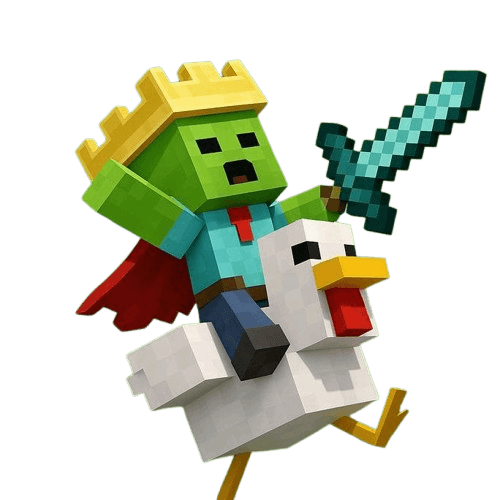
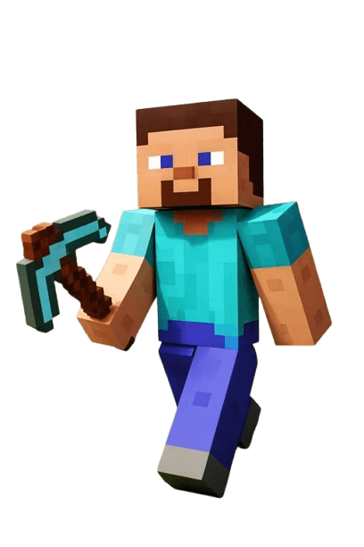
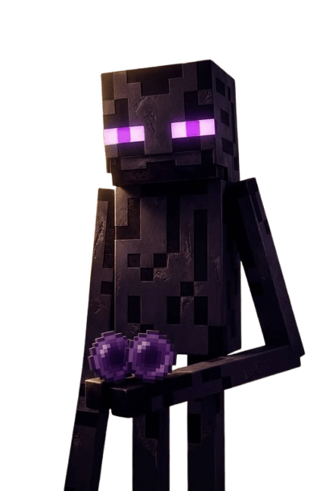
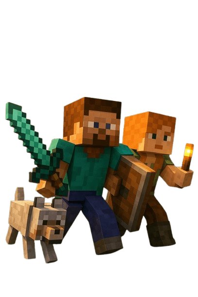

¡Te damos la más cálida bienvenida a la tienda oficial de nuestra comunidad de Minecraft!
Aquí encontrarás todo lo necesario para elevar tu experiencia de juego al siguiente nivel.
Explora nuestro catálogo exclusivo de rangos, cosméticos, paquetes de recursos y beneficios especiales.
Cada compra ayuda a mantener nuestros servidores en línea, actualizados y sin lag para todos.
¿Buscas destacar en el lobby? Revisa nuestros paquetes VIP con partículas y accesorios únicos.
Si prefieres la aventura Survival, tenemos kits de herramientas y protecciones para tus construcciones.
Para los fanáticos del PvP, contamos con mejoras estéticas y efectos de batalla espectaculares.
Tu apoyo constante nos permite seguir desarrollando modalidades creativas e innovadoras.
Asegúrate de ingresar tu nombre de usuario exacto de Minecraft antes de confirmar la compra.
Si juegas desde Bedrock Edition, recuerda colocar el prefijo correspondiente si tu cuenta lo requiere.
¿Tienes dudas o tuviste algún inconveniente? Nuestro equipo de soporte está siempre disponible.


Mojang acaba de sorprender a toda la comunidad con el anuncio oficial de la versión 1.25, titulada "El Reino de las Sombras", la cual promete cambiar la forma en la que exploramos el mundo.
>Por primera vez en la historia del juego, se han añadido personajes no jugables (NPCs) con nombres, historias y rutas de movimiento independientes, dejando atrás a los clásicos aldeanos estáticos.
El primer personaje revelado es "Elowen", una elfa arquera que patrulla los biomas de Bosque Oscuro y que puede defenderte de los monstruos si le ofreces esmeraldas.
También conoceremos a "Grom", un enano herrero que habita en las profundidades de las nuevas cavernas de magma, buscando minerales extraños para forjar armas.
Elowen no solo es una guerrera, sino que tiene un inventario rotativo; los jugadores podrán intercambiar con ella semillas mágicas que crecen instantáneamente bajo la luz de la luna.
Por su parte, Grom tiene la capacidad exclusiva de mejorar tus herramientas de Netherite a un nuevo nivel nunca antes visto, siempre y cuando le lleves el nuevo material del juego.
Este nuevo material se llama "Aethel", un mineral de color blanco brillante que solo se genera en las islas exteriores del End, debajo de las ciudades del coro.
Crear una armadura completa de Aethel te otorgará un efecto pasivo y permanente de caída lenta, eliminando por completo el daño por caída mientras la lleves puesta.
Sin embargo, minar Aethel no será fácil, ya que ha atraído a una nueva criatura hostil: "Los Sombríos", entes de humo negro que se teletransportan a tu espalda cuando dejas de mirarlos.
Derrotar a los Sombríos es un desafío, pero al hacerlo soltarán un nuevo objeto llamado "Esencia oscura", vital para la alquimia avanzada.
Si mezclas la Esencia oscura con una poción de visión nocturna, obtendrás la nueva "Poción de Vacío", la cual te vuelve indetectable para los monstruos hostiles incluso si los golpeas.
La versión 1.25 también introduce a un nuevo jefe: "El Rey de las Profundidades", una colosal criatura marina acorazada que domina los océanos.
Para invocar a este jefe, los jugadores deberán encontrar una nueva mega-estructura submarina llamada "La Ciudad Hundida", llena de trampas y rompecabezas de agua.
Al vencer al Rey de las Profundidades, los jugadores serán recompensados con el "Tridente del Abismo", un arma que invoca géiseres que lanzan a los enemigos por los aires.
Para los amantes de la redstone, se ha añadido el "Cristal de eco puro", un bloque que permite transmitir señales de energía de forma inalámbrica hasta a 50 bloques de distancia.
La fauna del juego también se expande con la llegada de los "Osos de cristal", unas majestuosas criaturas neutrales que habitan exclusivamente en los picos helados.
Estos osos pueden ser domesticados utilizando fragmentos de Aethel, y una vez domados, puedes equiparlos con cofres para que funcionen como almacenes móviles en tus expediciones.
Los aldeanos también han recibido una actualización, incluyendo una nueva profesión: "El Astrólogo", que requiere un bloque de telescopio en su área de trabajo.
El Astrólogo venderá mapas estelares, un nuevo tipo de objeto que te indica exactamente dónde caerá un meteorito, un nuevo evento dinámico que ocurre rara vez por las noches.
Sin duda, la versión 1.25 marcará un antes y un después. ¡Prepara tus herramientas y reúne a tus amigos, porque las primeras Snapshots llegarán la próxima semana!

